Cẩm Nang
[Cẩm Nang]Tổng Hợp Thông Linh Thú
1. Tam Đầu Xà
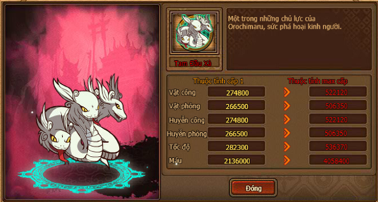
2. Nhất Vĩ Shikaku
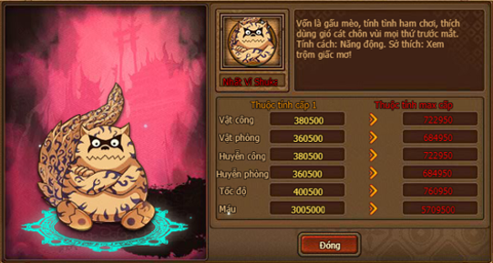
3. Nhị Vĩ Matatal
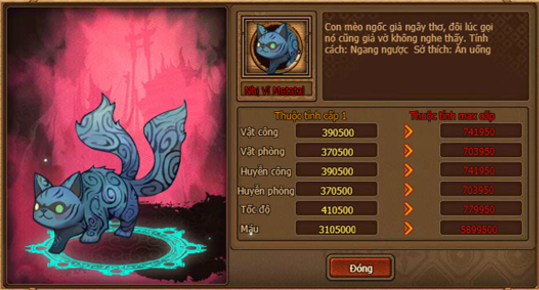
4. Ngũ Vĩ Kukuo
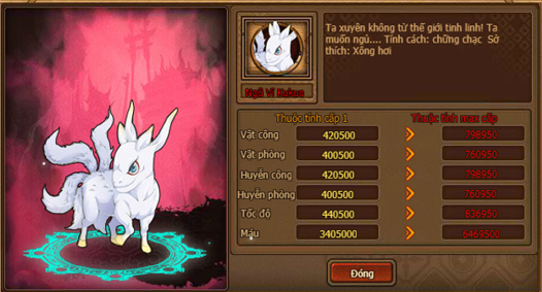
5. Bát Vĩ Gyuki
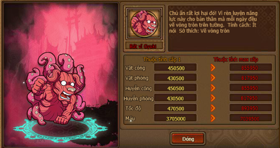
6. Tam Vĩ Isobu
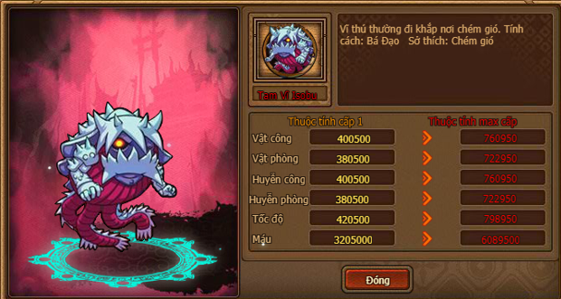
7. Tứ Vĩ Goku
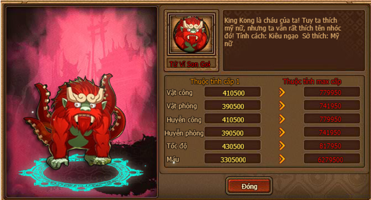
8. Cửu Vĩ Kurama
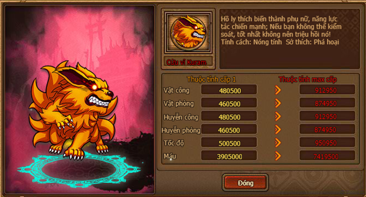
9. Lục Vĩ Saiken
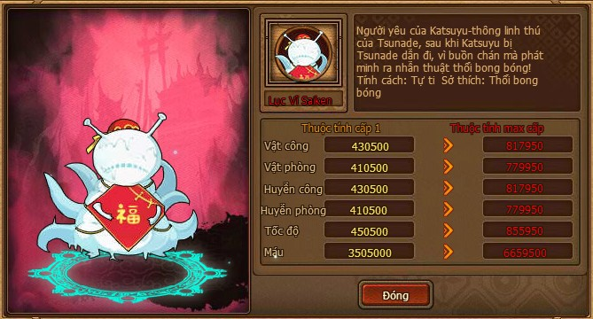
10. Thất Vĩ Chomei
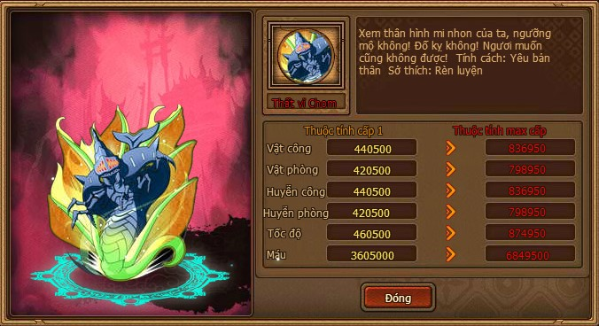
11. Thập Vĩ Juubi
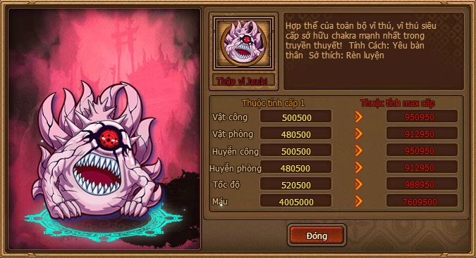
12. Cóc Hồ Lô
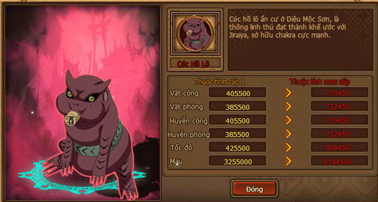
13. Shima
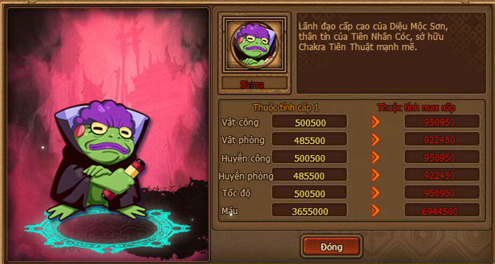
14. Fukasaku
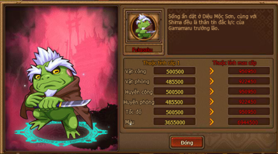
15. Thập vĩ Juubi 2
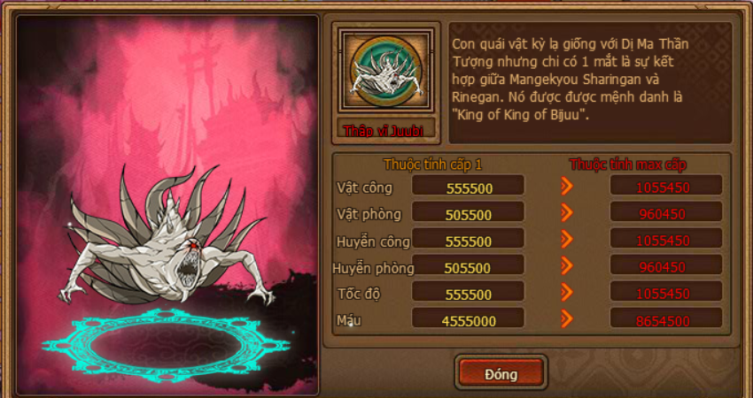